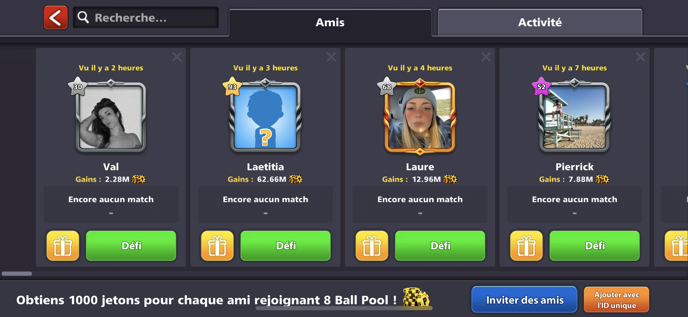

Présentation
8 Ball Pool est une application de simulation de billard créee en 2010. Tout les modes de jeu de billard y sont disponible. On peut participer à des tournois, des parties simples, le but étant de collecter l'ensemble des trophées de chacune des tables, mais surtout, de s'amuser.

Utilisation
Après avoir crée un compte ou lié son compte Facebook, nous pouvons directement jouer avec nos amis, ou affronter des inconnus.
Accueil

L'accueil nous permet d'ouvrir les recompenses gagnées mais est aussi la plaque tournante vers toutes les fonctionnalités du jeu.
Les tables

On peut choisir de jouer sur une multitudes de tables en fonctions d'une mise, allant de 50 jetons à 10M de jetons. En cas de victoires, la mise est doublée.
Mini Jeux
Il existe des mini jeux tels qu'une roulette, un coup magique et des boites surprises qui nous
permettent de gagner des jetons, des queues, des billets et plein d'autres récompenses.
Amis
C'est ici que nous défions nos amis, on peut aussi voir le nombre de jetons
qu'ils ont gagnés depuis la création de leurs comtpes.
Pourquoi j'aime cette application?
J'aime cette application car elle permet de tuer le temps (autant vous dire que je ne l'ai pas ouverte depuis la rentrée).
Les modes de compétitions sont prenants et la jouabilité se rapproche d'une partie de billard réelle.